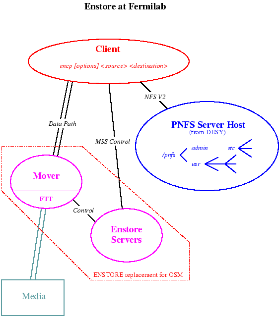

Table of Contents

(also available in Postscript)
Enstore has been designed to provide logging of data directly from the experiment's data acquisition systems. The writing and reading of tapes must therefore be reliable and efficient, and the system must be robust enough to support this critical application without compromising data taking. Enstore's goal is to provide a system that can be extended as needed for the experiments actual data taking needs, as well as be easily maintainable for the duration of several data taking runs.
Enstore provides the following features:
Enstore is based on a client-server model that allows hot swapping of hardware components and dynamic software configuration, is platform independent, runs on heterogeneous environments and is easily extendable. Most of the operations are transparent to the user. System performance is monitored and fine tunable. A great deal of care has been taken to ensure that it is able to prevent or to recover from a worst case scenario. The system has layers around it to customize and address problems as they occur. When possible, these layers are expected to use already existing components (e.g. ftt, pnfs).
The system is written in python, a scripting language that has advanced object-oriented features. Python provides a sound environment for quick turn-around and a seamless integration/migration path to fully compiled languages, such as C and C++, if there is a demand for even better performance.
Enstore has four major kinds of software components:
(also available in Postscript)
Enstore does not yet support a disk cache or buffer in front of the media. However, one is conceivable and planned for a future release.
Like tcp, the system is architected with distributed and peer-to-peer reliability. Each request originating from the encp program is branded with a unique ID. Encp retries under well-defined circumstances, issuing an equivalent request with a new unique ID. The system can instruct encp to retry if it needs to back out of an operation.
The DESY pnfs package implements an nfs-v2 daemon and mount daemon. These daemons do not actually serve a file system, but, instead make a collection of database entries looks like a file system, and provide control information for the system. Each file that is created in pnfs has 8 layers that Enstore uses to store metadata information about the file transfers. Normal UNIX permissions and administered export points are used to prevent unauthorized access to the name space.
To inspect files, users mount their portion of the pnfs file system on their own computers, and interact with it using the native operating system utilities. For example, users can ls, stat, mv, rm or touch existing "files", but are given errors on attempts to read or write the content of the files. Users can also mkdir and rmdir, and ln files. Hard links should be used to ensure all the metadata information is linked; symbolic links will not give the user what he naively expects.
There are some special pnfs files can also contain data that administrators can write to and users can read from, so in that sense pnfs also provides normal files as well, but these files are the exception rather than the rule.
Enstore uses pnfs for three different kinds of access and information:
*** These tests will have to be repeated *** under the final hardware configuration, but there is not indication of any problems.
$ upd list pnfs
DATABASE=/ftp/upsdb
Product=pnfs Version=v3_1_3a-f4 Flavor=Linux+2
Qualifiers="" Chain=current
The UPD version can be decoded as follows: "v3_1_3a" is the DESY version of
pnfs, and the "-f4" signifies the 4th Fermi "release". None of the
DESY code is modified - Fermilab only adds its UPS packaging framework and
some local installation instructions. All fixes, changes, or updates to
pnfs, will always come from DESY.
It is expected that there will be only a few pnfs servers at
Fermilab. To date, pnfs servers have been installed on 3 Linux
nodes without any difficulty. Each time, a set of installation instructions
has been improved; however the pnfs server installation is still
not completely automatic. The Fermilab installation instructions are
distributed along with the UPD product.
On the node that is serving pnfs, pnfs takes over the normal
function of exporting nfs. Otherwise the machine is general
purpose. To be explicit, the only 2 processes pnfs server machine can not
run are rpc.mountd and rpc.nfsd. It runs the pnfs versions of these
instead. These processes are only concerned with exporting pnfs.
For example, Rip6 is the current (Jan 99) Enstore pnfsserver. Here is its /etc/fstab
rip6$ cat /etc/fstab /dev/sda6 / ext2 defaults 1 1 /dev/sda5 swap swap defaults 0 0 /dev/sdc1 /rip6a ext2 defaults,grpid 2 1 /dev/fd0 /mnt/floppy ext2 noauto 0 0 none /proc proc defaults 0 0 rip8:/fnal /fnal nfs soft,rsize=8192,wsize=8192 0 0 rip8:/home /home nfs soft,rsize=8192,wsize=8192 0 0 rip8:/usr/local /usr/local nfs soft,rsize=8192,wsize=8192 0 0 localhost:/fs /pnfs/fs nfs noauto,intr,bg,hard,rw,noac 0 0 rip6:/grau-ait /pnfs/grau/ait nfs noauto,user,intr,bg,hard,rw,noac 0 0 rip6:/grau-dlt /pnfs/grau/dlt nfs noauto,user,intr,bg,hard,rw,noac 0 0 rip6:/grau-mammoth /pnfs/grau/mammoth nfs noauto,user,intr,bg,hard,rw,noac 0 0 rip6:/stk-red20 /pnfs/stk/red20 nfs noauto,user,intr,bg,hard,rw,noac 0 0 rip6:/stk-red50 /pnfs/stk/red50 nfs noauto,user,intr,bg,hard,rw,noac 0 0 rip6:/rip6disk1 /pnfs/rip6 nfs noauto,user,intr,bg,hard,rw,noac 0 0
As you can see, rip6 is nfs mounting 3 disks from rip8 and mounting the pnfs disks it is exporting as well as the local disks. There are also numerous Enstore processes running on rip6, for example:
USER PID %CPU %MEM SIZE RSS TTY STAT START TIME COMMAND bakken 3280 0.0 7.3 20240 9448 ? S 00:17 0:14 python /home/bakken/enstore/src/configuration_server.py bakken 3334 0.0 4.9 20112 6356 ? S 00:17 0:01 python /home/bakken/enstore/src/log_server.py bakken 3366 0.0 5.7 37980 7352 ? S 00:17 0:02 python /home/bakken/enstore/src/volume_clerk.py bakken 3398 0.0 5.3 37760 6832 ? S 00:17 0:01 python /home/bakken/enstore/src/file_clerk.py bakken 3433 0.0 5.1 36472 6560 ? S 00:17 0:00 python /home/bakken/enstore/src/media_changer.py bakken 3465 0.0 8.8 33456 11300 ? S 00:17 0:01 python /home/bakken/enstore/src/mover.new.py bakken 3515 0.0 0.3 1140 492 ? S 00:18 0:00 db_checkpoint -h bakken 3520 0.0 0.3 1612 420 ? S 00:18 0:00 db_deadlock -h bakken 3523 0.0 5.3 30508 6808 ? S 00:18 0:01 python /home/bakken/enstore/src/admin_clerk.py bakken 3673 0.0 8.1 36760 10432 ? S 00:20 0:34 python /home/bakken/enstore/src/inquisitor.py bakken 12178 0.0 0.8 1552 1048 p2 S 19:38 0:00 /bin/login -h willow fnal.gov -p bakken
The main point, often confused, is that the pnfs server node remains a general purpose and usable machine.
Permission to mount the pnfs namespace is granted using a mechanism similar to the normal Unix nfs export permission scheme. There are DESY commands (the pmount command) that make this entire process very simple.
Pnfs can be started automatically on a boot-up. This allows other nodes to easily mount the namespaces after reboots.
Finally, it should be noted that a Run II pnfs server will need is a SCSI raid level5 disk system for its databases.
*** Live Backups of database and recovery procedures *** - to be discussed during March trip to DESY. This has not been a priority yet.
rip6:/grau-ait /pnfs/grau/ait nfs user,intr,bg,hard,rw,noac 0 0The "intr,bg,hard,rw,noac" mount options should not be changed as they are needed for proper operation.
*** Automounting will be investigated in early Feb 99 *** It is expected to work without problems. This is deemed especially important since it will streamline the production farm nodes disk mount administration.
Finally, it should be noted that mounting the pnfs namespace does not restrict the node in any other way - it can import and mount any other file systems and run any tasks as it normally would.
Commonly used commands are:
$ pcmd info M1 bfid="91184924000000L"; volume="flop309"; location_cookie="68608"; size="1252"; file_family="jon4"; filename="/pnfs/enstore/airedale/jon4/M1"; orig_name="/pnfs/enstore/airedale/jon4/M1"; map_file="/pnfs/enstore/volmap/jon4/flop309/000000068608"; pnfsid_file="00020000000000000050AE88"; pnfsid_map="00020000000000000050AEA0";
$ pcmd tags .
.(tag)(library) = ait
.(tag)(file_family) = jon-ait-3
.(tag)(file_family_width) = 2
$ pcmd library ait $ pcmd library xxx $ pcmd library xxx
$ pcmd file_family jon-ait-3 $ pcmd file_family xxx $ pcmd file_family xxx
$ pcmd file_family_width 2 $ pcmd file_family_width 10 $ pcmd file_family_width 10
$ pcmd bfid testfile 91551931700000L
$ pcmd xref testfile CA2902 (tape label) '0000_000000000_0000132' (positioning info) 104857600 (file size) jon-ait-1 (file family) /pnfs/grau/ait/jon1/100MB.trand__Jan05005204rip8.fnal.gov16199 (original name) /pnfs/grau/ait/volmap/jon-ait-1/CA2902/0000_000000000_0000132 (volume map name) 0001000000000000000928D0 (pnfs id of file) 0001000000000000000928E0 (pnfs id of volume map file)
$ pcmd ls testfile 3 4 -rw-rw-r-- 1 bakken g023 3692 Jan 5 00:55 ./.(use)(3)(testfile)
$ pcmd enstore_state Enstore enabled
$ pcmd pnfs_state /pnfs/grau/ait Pnfs up
$ ls -alsFt /pnfs/enstore/airedale/one 0 -rw-rw-r-- 1 bakken root 26 Jul 21 12:09 /pnfs/enstore/airedale/oneThe duplicate entry is /pnfs/enstore/volmap/jon/flop301/000000000000 In the general case, "jon" would be replaced by the file family name, "flop301" would become the volume name and "000000000000" would be the file order on tape.
$ ls -alsFt pnfs/enstore/volmap/jon/flop301/000000000000 0 -rw-r--r-- 1 root root 26 Jul 21 12:09 /pnfs/enstore/volmap/jon/flop301/000000000000The original file and the duplicate file contain cross reference information to allow the user to get to the other one and enough information to setup a transfer. An example of this was shown in the previous section in "pcmd info file" Consider a few cases.
% encp [options] src_file dst_fileCurrently there is no wildcarding allowed, but this is a straight forward extension to encp.
On reads from the HSM, encp scans all your files and groups them according to which volume they are on and then submits all the file requests that are on one specific volume, reads all the files for that volume from the hsm and then proceeds to the next volume. Encp processes the volumes in any order it chooses.
On writes to the HSM, encp processes each input file sequentially. Since the user must specify a single output directory, all input files belong to the same file family, and hence could all go to the same tape (if possible). Encp sets a flag,"don't dismount the volume too quickly - there's more files coming for the same family", that the mover uses to postpone the dismount and thereby bypass the extra times involved in the volume manipulations. Please note that there is no guarantee that all the files will go to one tape (there might not be room) or that they will be grouped together on the tape (there may be other writes to the same family that get intermixed).
Consider the following example (P=/pnfs/enstore/airedale) for reading from the HSM:
There are the following files on flop301: ran-1, ran-2 ran-3, ran-4
There are the following files on flop302: ran-5, ran-6 ran-7, ran-8
There are the following files on flop302: ran-9, ran-10 ran-11, ran-12
Encp submits the requests for all files on flop301 and reads back those files and then does the same for flop302 and flop303.
Here is the output of an actual test:
$ ecmd encp $P/ran-1 $P/ran-2 $P/ran-3 $P/ran-4 \
$P/test2/ran-5 $P/test2/ran-6 $P/test2/ran-7 $P/test2/ran-8 \
$P/test3/ran-9 $P/test3/ran-10 $P/test3/ran-11 $P/test3/ran-12 .
/pnfs/enstore/airedale/test2/ran-5 -> /home/bakken/enstore/src/ran-5 : 102400 bytes copied from flop302 at 0.190780317582 MB/S requestor:bakken cum= 3.534426
/pnfs/enstore/airedale/test2/ran-6 -> /home/bakken/enstore/src/ran-6 : 102400 bytes copied from flop302 at 0.426923710317 MB/S requestor:bakken cum= 3.787567
/pnfs/enstore/airedale/test2/ran-7 -> /home/bakken/enstore/src/ran-7 : 102400 bytes copied from flop302 at 0.462479436263 MB/S requestor:bakken cum= 3.999860
/pnfs/enstore/airedale/test2/ran-8 -> /home/bakken/enstore/src/ran-8 : 102400 bytes copied from flop302 at 0.462523304015 MB/S requestor:bakken cum= 4.212137
/pnfs/enstore/airedale/test3/ran-9 -> /home/bakken/enstore/src/ran-9 : 102400 bytes copied from flop303 at 0.129460905635 MB/S requestor:bakken cum= 5.479408
/pnfs/enstore/airedale/test3/ran-10 -> /home/bakken/enstore/src/ran-10 : 102400 bytes copied from flop303 at 0.491317380712 MB/S requestor:bakken cum= 5.679356
/pnfs/enstore/airedale/test3/ran-11 -> /home/bakken/enstore/src/ran-11 : 102400 bytes copied from flop303 at 0.454401235403 MB/S requestor:bakken cum= 5.895427
/pnfs/enstore/airedale/test3/ran-12 -> /home/bakken/enstore/src/ran-12 : 102400 bytes copied from flop303 at 0.455049173862 MB/S requestor:bakken cum= 6.111198
/pnfs/enstore/airedale/ran-1 -> /home/bakken/enstore/src/ran-1 : 102400 bytes copied from flop301 at 0.124436148701 MB/S requestor:bakken cum= 7.414610
/pnfs/enstore/airedale/ran-2 -> /home/bakken/enstore/src/ran-2 : 102400 bytes copied from flop301 at 0.45439695057 MB/S requestor:bakken cum= 7.630682
/pnfs/enstore/airedale/ran-3 -> /home/bakken/enstore/src/ran-3 : 102400 bytes copied from flop301 at 0.422761844505 MB/S requestor:bakken cum= 7.862842
/pnfs/enstore/airedale/ran-4 -> /home/bakken/enstore/src/ran-4 : 102400 bytes copied from flop301 at 0.454517460805 MB/S requestor:bakken cum= 8.078855
Here is the same transfer, but this time with the "--verbose=5" option enabled,
so more details of the transfers are printed out:
$ ecmd encp --list $P/ran-1 $P/ran-2 $P/ran-3 $P/ran-4 \
$P/test2/ran-5 $P/test2/ran-6 $P/test2/ran-7 $P/test2/ran-8 \
$P/test3/ran-9 $P/test3/ran-10 $P/test3/ran-11 $P/test3/ran-12 .
Storing/checking local info cum= 0.00021493434906
dt: 0.00107896327972 cum= 0.00155103206635
Checking input pnfs files: ['/pnfs/enstore/airedale/ran-1', '/pnfs/enstore/airedale/ran-2', '/pnfs/enstore/airedale/ran-3', '/pnfs/enstore/airedale/ran-4', '/pnfs/enstore/airedale/test2/ran-5', '/pnfs/enstore/airedale/test2/ran-6', '/pnfs/enstore/airedale/test2/ran-7', '/pnfs/enstore/airedale/test2/ran-8', '/pnfs/enstore/airedale/test3/ran-9', '/pnfs/enstore/airedale/test3/ran-10', '/pnfs/enstore/airedale/test3/ran-11', '/pnfs/enstore/airedale/test3/ran-12'] cum= 0.00179898738861
dt: 0.834562063217 cum= 0.836575031281
Checking output unix files: ['/home/bakken/enstore/src/.'] cum= 0.836683034897
['/home/bakken/enstore/src/ran-1', '/home/bakken/enstore/src/ran-2', '/home/bakken/enstore/src/ran-3', '/home/bakken/enstore/src/ran-4', '/home/bakken/enstore/src/ran-5', '/home/bakken/enstore/src/ran-6', '/home/bakken/enstore/src/ran-7', '/home/bakken/enstore/src/ran-8', '/home/bakken/enstore/src/ran-9', '/home/bakken/enstore/src/ran-10', '/home/bakken/enstore/src/ran-11', '/home/bakken/enstore/src/ran-12']
dt: 0.80575799942 cum= 1.64285504818
Requesting callback ports cum= 1.64292299747
airedale.fnal.gov 7613
dt: 0.0070469379425 cum= 1.65014898777
Calling Config Server to find file clerk cum= 1.6502250433
pcfarm9 7511
dt: 0.00744593143463 cum= 1.65786099434
Calling file clerk for file info cum= 1.65792798996
dt: 0.747581005096 cum= 2.40566301346
Sending ticket to file clerk cum= 2.4057289362
Q'd: /pnfs/enstore/airedale/test2/ran-5 90121648900000L bytes: 102400 on flop302 (516608, 619520) dt: 0.125765 cum=2.531657
Q'd: /pnfs/enstore/airedale/test2/ran-6 90121649400000L bytes: 102400 on flop302 (619520, 722432) dt: 0.251316 cum=2.657218
Q'd: /pnfs/enstore/airedale/test2/ran-7 90121651400000L bytes: 102400 on flop302 (722432, 825344) dt: 0.452826 cum=2.858725
Q'd: /pnfs/enstore/airedale/test2/ran-8 90121652100000L bytes: 102400 on flop302 (825344, 928256) dt: 11.345965 cum=13.751878
dt: 11.3462849855 cum= 13.752177
Waiting for mover to call back cum= 13.7522759438
airedale.fnal.gov 7614 cum: 13.7816929817
dt: 0.0294079780579 cum= 13.7819700241
Receiving data for file /home/bakken/enstore/src/ran-5 cum= 13.7820539474
bytes: 102400 Socket read Rate = 1.99837046939 MB/s
dt: 0.0488679409027 cum= 13.8313089609
Waiting for final mover dialog cum= 13.8313920498
dt: 0.119197010994 cum= 13.9508379698
/pnfs/enstore/airedale/test2/ran-5 -> /home/bakken/enstore/src/ran-5 : 102400 bytes copied from flop302 at 0.491777789917 MB/S requestor:bakken cum= 13.951014
Waiting for mover to call back cum= 13.9696760178
airedale.fnal.gov 7615 cum: 13.9908440113
dt: 0.0211460590363 cum= 13.9911179543
Receiving data for file /home/bakken/enstore/src/ran-6 cum= 13.9912029505
bytes: 102400 Socket read Rate = 2.06947075913 MB/s
dt: 0.0471889972687 cum= 14.0387710333
Waiting for final mover dialog cum= 14.0388560295
dt: 0.119550943375 cum= 14.1586530209
/pnfs/enstore/airedale/test2/ran-6 -> /home/bakken/enstore/src/ran-6 : 102400 bytes copied from flop302 at 0.516757071819 MB/S requestor:bakken cum= 14.158835
Waiting for mover to call back cum= 14.1599019766
airedale.fnal.gov 7616 cum: 14.2008810043
dt: 0.0409680604935 cum= 14.2011679411
Receiving data for file /home/bakken/enstore/src/ran-7 cum= 14.2012529373
bytes: 102400 Socket read Rate = 2.36295877514 MB/s
dt: 0.0413279533386 cum= 14.2429490089
Waiting for final mover dialog cum= 14.2430330515
dt: 0.114647984505 cum= 14.3579289913
/pnfs/enstore/airedale/test2/ran-7 -> /home/bakken/enstore/src/ran-7 : 102400 bytes copied from flop302 at 0.493126210693 MB/S requestor:bakken cum= 14.358107
Waiting for mover to call back cum= 14.359153986
airedale.fnal.gov 7617 cum: 14.3949129581
dt: 0.0357400178909 cum= 14.3951740265
Receiving data for file /home/bakken/enstore/src/ran-8 cum= 14.3953809738
bytes: 102400 Socket read Rate = 2.15405489264 MB/s
dt: 0.0453360080719 cum= 14.4412109852
Waiting for final mover dialog cum= 14.4412950277
dt: 0.122217059135 cum= 14.5637539625
/pnfs/enstore/airedale/test2/ran-8 -> /home/bakken/enstore/src/ran-8 : 102400 bytes copied from flop302 at 0.477291649552 MB/S requestor:bakken cum= 14.563928
udp_client.send: read old info: (16, {'unique_id': 901216851.972, 'bfid': '90121652100000L', 'file_clerk': {'bof_space_cookie': '(825344, 928256)', 'sanity_cookie': '(5000, 33638)', 'external_label': 'flop302', 'bfid': '90121652100000L', 'complete_crc': 30442}, 'sanity_cookie': '(5000, 33638)', 'complete_crc': 30442, 'pnfs_info': {'minor': 5, 'mode': 33268, 'gid': 0, 'gname': 'root', 'rminor': 0, 'uid': 5406, 'pnfsFilename': '/pnfs/enstore/airedale/test2/ran-8', 'pstat': (33204, 38375816, 5, 1, 5406, 0, 102400, 901216512, 901216512, 901216521), 'rmajor': 0, 'uname': 'bakken', 'major': 0}, 'user_info': {'gname': 'g023', 'uid': 5406, 'gid': 1530, 'fullname': '/home/bakken/enstore/src/ran-8', 'uname': 'bakken', 'machine': ('Linux', 'airedale', '2.0.35', '#1 Mon Jul 20 08:54:09 CDT 1998', 'i686')}, 'bof_space_cookie': '(825344, 928256)', 'sanity_size': 5000, 'external_label': 'flop302', 'user_callback_port': 7613, 'work': 'read_from_hsm', 'user_callback_host': 'airedale.fnal.gov', 'status': 'ok'}, 901216872.506) ('131.225.97.10', 7511)
Q'd: /pnfs/enstore/airedale/test3/ran-9 90121653300000L bytes: 102400 on flop303 (928256, 1031168) dt: 0.136023 cum=14.701104
Q'd: /pnfs/enstore/airedale/test3/ran-10 90121653900000L bytes: 102400 on flop303 (1031168, 1134080) dt: 0.287928 cum=14.853003
Q'd: /pnfs/enstore/airedale/test3/ran-11 90121655100000L bytes: 102400 on flop303 (1134080, 1236992) dt: 0.413479 cum=14.978561
Q'd: /pnfs/enstore/airedale/test3/ran-12 90121655600000L bytes: 102400 on flop303 (1236992, 1339904) dt: 0.541382 cum=15.106496
dt: 12.7008770704 cum= 15.1067709923
Waiting for mover to call back cum= 15.1068719625
airedale.fnal.gov 7618 cum: 15.6871869564
dt: 0.580304026604 cum= 15.6874320507
Receiving data for file /home/bakken/enstore/src/ran-9 cum= 15.6875170469
bytes: 102400 Socket read Rate = 1.34824877428 MB/s
dt: 0.0724319219589 cum= 15.7603620291
Waiting for final mover dialog cum= 15.7604500055
dt: 0.0972409248352 cum= 15.8579269648
/pnfs/enstore/airedale/test3/ran-9 -> /home/bakken/enstore/src/ran-9 : 102400 bytes copied from flop303 at 0.130022665084 MB/S requestor:bakken cum= 15.858102
Waiting for mover to call back cum= 15.859210968
airedale.fnal.gov 7619 cum: 15.9228279591
dt: 0.0635979175568 cum= 15.9230870008
Receiving data for file /home/bakken/enstore/src/ran-10 cum= 15.9231729507
bytes: 102400 Socket read Rate = 1.52604351981 MB/s
dt: 0.0639930963516 cum= 15.9875530005
Waiting for final mover dialog cum= 15.9876400232
dt: 0.0923020839691 cum= 16.0801730156
/pnfs/enstore/airedale/test3/ran-10 -> /home/bakken/enstore/src/ran-10 : 102400 bytes copied from flop303 at 0.441947460475 MB/S requestor:bakken cum= 16.080348
Waiting for mover to call back cum= 16.0814180374
airedale.fnal.gov 7620 cum: 16.1459280252
dt: 0.0644949674606 cum= 16.1461839676
Receiving data for file /home/bakken/enstore/src/ran-11 cum= 16.1462689638
bytes: 102400 Socket read Rate = 1.42897512202 MB/s
dt: 0.0683400630951 cum= 16.2150000334
Waiting for final mover dialog cum= 16.2150889635
dt: 0.0967879295349 cum= 16.3121169806
/pnfs/enstore/airedale/test3/ran-11 -> /home/bakken/enstore/src/ran-11 : 102400 bytes copied from flop303 at 0.423289390535 MB/S requestor:bakken cum= 16.312295
Waiting for mover to call back cum= 16.3133749962
airedale.fnal.gov 7621 cum: 16.3780419827
dt: 0.0646479129791 cum= 16.3782949448
Receiving data for file /home/bakken/enstore/src/ran-12 cum= 16.3783789873
bytes: 102400 Socket read Rate = 1.48648697691 MB/s
dt: 0.0656960010529 cum= 16.4444799423
Waiting for final mover dialog cum= 16.4445669651
dt: 0.0912410020828 cum= 16.5361510515
/pnfs/enstore/airedale/test3/ran-12 -> /home/bakken/enstore/src/ran-12 : 102400 bytes copied from flop303 at 0.438329425538 MB/S requestor:bakken cum= 16.536341
Q'd: /pnfs/enstore/airedale/ran-1 90121542000000L bytes: 102400 on flop301 (2048, 104960) dt: 0.129802 cum=16.667315
Q'd: /pnfs/enstore/airedale/ran-2 90121542700000L bytes: 102400 on flop301 (104960, 207872) dt: 0.260114 cum=16.797613
Q'd: /pnfs/enstore/airedale/ran-3 90121543200000L bytes: 102400 on flop301 (207872, 310784) dt: 0.390148 cum=16.927652
Q'd: /pnfs/enstore/airedale/ran-4 90121543600000L bytes: 102400 on flop301 (310784, 413696) dt: 0.517002 cum=17.054500
dt: 14.6489070654 cum= 17.0548000336
Waiting for mover to call back cum= 17.0549010038
airedale.fnal.gov 7622 cum: 17.6872760057
dt: 0.632364988327 cum= 17.687525034
Receiving data for file /home/bakken/enstore/src/ran-1 cum= 17.6876089573
bytes: 102400 Socket read Rate = 1.47265556183 MB/s
dt: 0.0663130283356 cum= 17.7543139458
Waiting for final mover dialog cum= 17.7544020414
dt: 0.0931440591812 cum= 17.8477829695
/pnfs/enstore/airedale/ran-1 -> /home/bakken/enstore/src/ran-1 : 102400 bytes copied from flop301 at 0.123163392809 MB/S requestor:bakken cum= 17.847959
Waiting for mover to call back cum= 17.8490309715
airedale.fnal.gov 7623 cum: 17.9164079428
dt: 0.0673609972 cum= 17.9166640043
Receiving data for file /home/bakken/enstore/src/ran-2 cum= 17.9167480469
bytes: 102400 Socket read Rate = 0.66466315728 MB/s
dt: 0.146925926208 cum= 18.0640599728
Waiting for final mover dialog cum= 18.0641460419
dt: 0.0902429819107 cum= 18.1546230316
/pnfs/enstore/airedale/ran-2 -> /home/bakken/enstore/src/ran-2 : 102400 bytes copied from flop301 at 0.319555867275 MB/S requestor:bakken cum= 18.154798
Waiting for mover to call back cum= 18.1558859348
airedale.fnal.gov 7624 cum: 18.2239129543
dt: 0.0680110454559 cum= 18.224167943
Receiving data for file /home/bakken/enstore/src/ran-3 cum= 18.2242510319
bytes: 102400 Socket read Rate = 1.40887460294 MB/s
dt: 0.0693150758743 cum= 18.293956995
Waiting for final mover dialog cum= 18.2940440178
dt: 0.0940099954605 cum= 18.3883080482
/pnfs/enstore/airedale/ran-3 -> /home/bakken/enstore/src/ran-3 : 102400 bytes copied from flop301 at 0.42014781079 MB/S requestor:bakken cum= 18.388487
Waiting for mover to call back cum= 18.3895900249
airedale.fnal.gov 7625 cum: 18.4557709694
dt: 0.0661630630493 cum= 18.4560240507
Receiving data for file /home/bakken/enstore/src/ran-4 cum= 18.4561079741
bytes: 102400 Socket read Rate = 1.43308480601 MB/s
dt: 0.0681440830231 cum= 18.524641037
Waiting for final mover dialog cum= 18.5247290134
dt: 0.0877720117569 cum= 18.6127489805
/pnfs/enstore/airedale/ran-4 -> /home/bakken/enstore/src/ran-4 : 102400 bytes copied from flop301 at 0.437588604748 MB/S requestor:bakken cum= 18.612926
Complete: 1228800 bytes in 12 files in 18.6140960455 S. Overall rate = 0.0629563206903 MB/s
Here's an example of writing 4 unix files to the HSM:
Linux-airedale[353] 09:17:37 jon1$ ecmd encp ran-1 ran-2 ran-3 ran-4 $P/test /home/bakken/enstore/test/jon1/ran-1 -> /pnfs/enstore/airedale/test/ran-1 : 10485760 bytes copied to flop306 at 1.11655493497 MB/S requestor:bakken cumt= 10.983013 /home/bakken/enstore/test/jon1/ran-2 -> /pnfs/enstore/airedale/test/ran-2 : 10485760 bytes copied to flop306 at 1.18191504602 MB/S requestor:bakken cumt= 19.482414 /home/bakken/enstore/test/jon1/ran-3 -> /pnfs/enstore/airedale/test/ran-3 : 10485760 bytes copied to flop306 at 1.25504795528 MB/S requestor:bakken cumt= 27.481132 /home/bakken/enstore/test/jon1/ran-4 -> /pnfs/enstore/airedale/test/ran-4 : 10485760 bytes copied to flop306 at 1.02843066309 MB/S requestor:bakken cumt= 37.235880 Complete: 41943040 bytes in 4 files in 37.239297986 S. Overall rate = 1.07413410465 MB/sAnd here's the same test but with the verbose=5 flag set:
Linux-airedale[368] 09:21:40 jon1$ ecmd encp --verbose=5 ran-1 ran-2 ran-3 ran-4 $P/test/testa Getting clients, storing/checking local info cumt= 0.125026941299 Connecting to configuration server at pcfarm9.fnal.gov 7510 dt: 0.0242840051651 cumt= 0.151304960251 csc=u= logc= uinfo= {'gname': 'g023', 'uid': 5406, 'gid': 1530, 'fullname': '', 'uname': 'bakken', 'machine': ('Linux', 'airedale', '2.0.35', '#1 Mon Jul 20 08:54:09 CDT 1998', 'i686')} Checking input unix files: ['/home/bakken/enstore/test/jon1/ran-1', '/home/bakken/enstore/test/jon1/ran-2', '/home/bakken/enstore/test/jon1/ran-3', '/home/bakken/enstore/test/jon1/ran-4'] cumt= 0.152971982956 dt: 0.185861945152 cumt= 0.339438915253 ninput= 4 inputlist= ['/home/bakken/enstore/test/jon1/ran-1', '/home/bakken/enstore/test/jon1/ran-2', '/home/bakken/enstore/test/jon1/ran-3', '/home/bakken/enstore/test/jon1/ran-4'] file_size= [10485760, 10485760, 10485760, 10485760] delayed_dismount= 1 Checking output pnfs files: ['/pnfs/enstore/airedale/test/testa'] cumt= 0.345446944237 dt: 0.51175403595 cumt= 0.857663989067 outputlist= ['/pnfs/enstore/airedale/test/testa/ran-1', '/pnfs/enstore/airedale/test/testa/ran-2', '/pnfs/enstore/airedale/test/testa/ran-3', '/pnfs/enstore/airedale/test/testa/ran-4'] library= ['airedaledisk', 'airedaledisk', 'airedaledisk', 'airedaledisk'] file_family= ['jon', 'jon', 'jon', 'jon'] width= [1, 1, 1, 1] pinfo= [{'pstat': (16893, 38392440, 5, 1, 5406, 1530, 512, 901808412, 901808412, 901808412), 'minor': 0, 'rmajor': 0, 'mode': 32798, 'gname': 'g023', 'rminor': 0, 'uid': 5406, 'pnfsFilename': '/pnfs/enstore/airedale/test/testa/ran-1', 'gid': 1530, 'major': 0, 'uname': 'bakken'}, {'pstat': (16893, 38392440, 5, 1, 5406, 1530, 512, 901808412, 901808412, 901808412), 'minor': 0, 'rmajor': 0, 'mode': 32798, 'gname': 'g023', 'rminor': 0, 'uid': 5406, 'pnfsFilename': '/pnfs/enstore/airedale/test/testa/ran-2', 'gid': 1530, 'major': 0, 'uname': 'bakken'}, {'pstat': (16893, 38392440, 5, 1, 5406, 1530, 512, 901808412, 901808412, 901808412), 'minor': 0, 'rmajor': 0, 'mode': 32798, 'gname': 'g023', 'rminor': 0, 'uid': 5406, 'pnfsFilename': '/pnfs/enstore/airedale/test/testa/ran-3', 'gid': 1530, 'major': 0, 'uname': 'bakken'}, {'pstat': (16893, 38392440, 5, 1, 5406, 1530, 512, 901808412, 901808412, 901808412), 'minor': 0, 'rmajor': 0, 'mode': 32798, 'gname': 'g023', 'rminor': 0, 'uid': 5406, 'pnfsFilename': '/pnfs/enstore/airedale/test/testa/ran-4', 'gid': 1530, 'major': 0, 'uname': 'bakken'}] p= Requesting callback ports cumt= 0.862877011299 airedale.fnal.gov 7600 dt: 0.238645911217 cumt= 1.10273790359 Calling Config Server to find airedaledisk.library_manager cumt= 1.10303294659 airedale 7517 dt: 0.0058319568634 cumt= 1.10947692394 Sending ticket to airedaledisk.library_manager cumt= 1.10977995396 Q'd: /home/bakken/enstore/test/jon1/ran-1 airedaledisk family: jon bytes: 10485760 dt: 0.0713790655136 cumt= 1.18164396286 Waiting for mover to call back cumt= 1.18626201153 airedale.fnal.gov 7601 cum: 2.64205896854 dt: 1.45555996895 cumt= 2.64386999607 Sending data for file /pnfs/enstore/airedale/test/testa/ran-1 cumt= 2.64423692226 bytes: 10485760 Socket Write Rate = 2.01092899528 MB/s dt: 4.97282600403 cumt= 7.61788499355 Waiting for final mover dialog cumt= 7.61800897121 dt: 0.35071003437 cumt= 7.96896100044 Adding file to pnfs cumt= 7.96911489964 dt: 1.93133103848 cumt= 9.90079092979 /home/bakken/enstore/test/jon1/ran-1 -> /pnfs/enstore/airedale/test/testa/ran-1 : 10485760 bytes copied to flop306 at 1.14729553162 MB/S requestor:bakken cumt= 9.903162 Sending ticket to airedaledisk.library_manager cumt= 9.91201090813 Q'd: /home/bakken/enstore/test/jon1/ran-2 airedaledisk family: jon bytes: 10485760 dt: 0.0295230150223 cumt= 9.94205701351 Waiting for mover to call back cumt= 9.94686996937 airedale.fnal.gov 7601 cum: 10.7699859142 dt: 0.822878956795 cumt= 10.7718319893 Sending data for file /pnfs/enstore/airedale/test/testa/ran-2 cumt= 10.7721740007 bytes: 10485760 Socket Write Rate = 2.1859992052 MB/s dt: 4.57456707954 cumt= 15.3475339413 Waiting for final mover dialog cumt= 15.3476879597 dt: 0.278494954109 cumt= 15.6264359951 Adding file to pnfs cumt= 15.6266009808 dt: 2.92102301121 cumt= 18.5479849577 /home/bakken/enstore/test/jon1/ran-2 -> /pnfs/enstore/airedale/test/testa/ran-2 : 10485760 bytes copied to flop306 at 1.16245629222 MB/S requestor:bakken cumt= 18.549760 Sending ticket to airedaledisk.library_manager cumt= 18.5514349937 Q'd: /home/bakken/enstore/test/jon1/ran-3 airedaledisk family: jon bytes: 10485760 dt: 0.0314730405807 cumt= 18.5834269524 Waiting for mover to call back cumt= 18.5839298964 airedale.fnal.gov 7601 cum: 19.4579730034 dt: 0.873831033707 cumt= 19.459815979 Sending data for file /pnfs/enstore/airedale/test/testa/ran-3 cumt= 19.4601159096 bytes: 10485760 Socket Write Rate = 2.0228595011 MB/s dt: 4.94349706173 cumt= 24.4044009447 Waiting for final mover dialog cumt= 24.4045529366 dt: 0.289401054382 cumt= 24.6942389011 Adding file to pnfs cumt= 24.6957499981 dt: 1.75857806206 cumt= 26.4547179937 /home/bakken/enstore/test/jon1/ran-3 -> /pnfs/enstore/airedale/test/testa/ran-3 : 10485760 bytes copied to flop306 at 1.27029727496 MB/S requestor:bakken cumt= 26.456495 Sending ticket to airedaledisk.library_manager cumt= 26.4581599236 Q'd: /home/bakken/enstore/test/jon1/ran-4 airedaledisk family: jon bytes: 10485760 dt: 0.0315480232239 cumt= 26.4902279377 Waiting for mover to call back cumt= 26.4907259941 airedale.fnal.gov 7601 cum: 27.4995449781 dt: 1.00860905647 cumt= 27.5014169216 Sending data for file /pnfs/enstore/airedale/test/testa/ran-4 cumt= 27.5017179251 bytes: 10485760 Socket Write Rate = 2.04191980491 MB/s dt: 4.89735198021 cumt= 32.3998779058 Waiting for final mover dialog cumt= 32.4000319242 dt: 0.259968996048 cumt= 32.6602540016 Adding file to pnfs cumt= 32.6604199409 dt: 2.11265301704 cumt= 34.7734309435 /home/bakken/enstore/test/jon1/ran-4 -> /pnfs/enstore/airedale/test/testa/ran-4 : 10485760 bytes copied to flop306 at 1.20713143087 MB/S requestor:bakken cumt= 34.775209 Complete: 41943040 bytes in 4 files in 34.7769209146 S. Overall rate = 1.15018808302 MB/s
Virtual Library -- A virtual library contains one and only one kind of media. For example, Enstore divides an STK powderhorn library holding 50, 20 and 10 GB redwood media into at least three virtual libraries. In common usage, the term "library" in Enstore refers to a virtual library. Writes are directed to a specific (virtual) library, thus selecting the media.
Drives -- Drives are bound to special processes called Mover clients. The drives can be dynamically assigned allowing the number of drives to be less than the number of virtual libraries.
Volumes -- Are uniquely identified by an external label, which is known to the Media Changer.
| Column Name | Type | Comments |
| external_label | string [primary_key] | Volume name specified by user on volume creation; is used to display volume meta-data. |
| file_family | string ("none") | File family name, specified by user on volume creation; only files that belong to this family will be stored on this volume. |
| media_type | string | Specified at volume creation; implies the block-size; used for writing. |
| library | string | Specified by user on volume declaration; defines which (virtual) library currently holds the volume |
| first_access | int (-1) | Unix time when user issues the first write command to copy data to the volume. Set by the Volume Clerk. |
| last_access | int (-1) | Unix time when user last accessed the volume. Set by the Volume Clerk. |
| declared | int | Unix time when the volume is declared available to the system. Set by the Volume Clerk. |
| capacity_bytes | 64-bit int | Specified by user on volume creation; estimate of the number of bytes that would fit on the volume. |
| blocksize | int | Set by the Volume Clerk; derived from the the media type. |
| remaining_bytes | 64-bit int | Specified by the user on volume creation; estimate of the number of bytes that would fit on the volume; updated by the Volume Clerk every time data are written to the media. |
| eod_cookie | string ("none") | Tells the driver how to space to the end of the volume; it is driver specific; updated by the Volume Clerk when data are written on the media. |
| wrapper | string ("cpio") | Wrapper method; currently specifies the format of the files on the volume. |
| sum_rd_err | int (0) | Read error count; Volume Clerk increments this field when the Mover receives an error while reading from the volume. |
| sum_rd_access | int (0) | Read access count; Volume Clerk increments this field every time a file is read. |
| sum_wr_err | int (0) | Write error count; Volume Clerk increments this field when the Mover receives an error while writing to the volume. |
| sum_wr_access | int (0) | Write access count; Volume Clerk increments this field every time a file is written. |
| user_inhibit | string (d:"none" or "readonly", "noaccess") | Specified by user at volume creation; access level for this volume, updated by Volume Clerk. |
| system_inhibit | string (d:"none" or "writing", "readonly", "full", "noaccess") | Administrator generated limitation on the kind of access permitted to this volume; updated by Volume Clerk when data are written on the volume, an error occurred while data were being written or the file size exceeded the remaining number of bytes on the volume. |
The Volume Clerk does the following operations:
| Column Name | Type | Comments |
| bfid | string [primary_key] | bit file ID; uniquely identifies every file in the system. |
| external_label | string | Volume name on which the file has been written; same as the external_label in the volume table. |
| bof_space_cookie | string | Driver specific string telling how to space to the file on the media. A lexical sort of all bof_space_cookies for a given volume will yield a optimized traversal of the volume. |
| complete_crc | int | crc of all the bits sent by the user. |
| sanity_cookie | string ("(0,0)") | Number of bytes used for a sanity crc and the sanity crc itself. The sanity crc is just the normal crc but only for the 1st N bytes in the file. This allows the Mover to check early in the transfer process that it probably has the right user file selected; it at least will know if it has the wrong file. |
The File Clerk supports the following requests:
| Mover sends | Library Manager may respond |
| idle_mover | if work needs to be done - bind a volume; or if no work - just acknowledge |
| have_bound_volume | if reads/writes pending for the volume - read/write; or if no work - unbind volume |
| unilateral_unbind | just acknowledge |
| Library has just responded | Mover sends | Library Manager presumes |
| bind or... read or... write | idle_mover | Mover crashed and was re-started |
| have_bound_volume | look for work on that volume if work, give it if none, give unbind volume | |
| unilateral_unbind | take any work reserved for that Mover and put it back in the unassigned work queue | |
| acknowledged a... unilateral unbind or.. idle Mover | idle_mover | Mover is available for work, If more work available, bind a volume |
| have_bound_volume | it has restarted, the Mover had a volume from a previous instance of me, tell it to unbind | |
| Unilateral_unbind | Just acknowledge |
The Mover is responsible for efficient data movement and as such is an integral part of the system. The architecture allows for performance critical code to be written in "C" thus allowing efficient access to fundamental OS features such as forking with minimal to no language overhead.
Although a Mover is bound to a drive, and a drive may serve more than one virtual library, i.e., the Mover has a dynamic list of of Library Managers that it is supposed to service. This has two benefits. First, since a Library Manager handles only one type of media, a drive which handles multiple types of media (i.e. different capacity media) can be shared without a static partitioning of the system. Second, if we are partitioning resources in a library, we can assign a Library Manager to each type of use. For example, suppose Group A and Group B want to share the capacity of a library. Suppose half the tapes belong to Group A and the half to Group B. We want to guarantee that Group A have one third of the tape drives, Group B have one third, and the last third be shared. The Movers can be configured to do this easily. And with some slight changes, this is how we can guarantee resources to data acquisition.
The Mover hunts Library Managers that have work when it is idle by consulting a Configuration Server. A Mover's configuration gives a list of Library Managers to hunt among for work. If there is no work at any Library Manager, the Mover sleeps for a while and begins the hunt again. While sleeping the Mover is sensitive to datagrams at a specific UDP address. A Library Manager uses this mechanism to try to hasten a Mover when the Library Manager has work queued up.
When a Mover has found a Library Manager that has work, it attempts to mount the salient volume, by contacting the physical library's Media Changer. If there is some error, it issues a unilateral unbind to the Library Manager. If all is well, it issues a have_bound_volume to the Library Manager.
Reads -- Once a volume is bound the Mover may read a volume and send data to a waiting encp program. Two tcp ports are involved. The steps are:
Writes -- Once a volume is bound the Mover may receive data and write it to the volume. Two tcp ports are involved. The steps are:
Additionally it is expected that a trace module will be developed.
The inquisitor will listen for command line requests sent to it and will periodically check to see if it is time to update information for any of the servers that it is monitoring. If so, then the server in question is contacted and the resulting information is formated for output to the various reports. The possible information gathered from each of the servers and which report it ends up in are listed below. In addition to gathering information of each Enstore server, the Inquisitor will collect information from the log files on encp commands and report on the blocksizes set in the Enstore config file.
| SERVER | INFORMATION GATHERED | REPORTS EFFECTED |
| blocksizes | continuous Ascii status file and html snapshot file |
|
| encp command history | encp html snapshot file | |
| admin_clerk | alive status | continuous Ascii status file and html snapshot file |
| config_server | alive status | continuous Ascii status file and html snapshot file |
| file_clerk | alive status | continuous Ascii status file and html snapshot file |
| inquisitor | alive status refetch config file from config server |
continuous Ascii status file and html snapshot file |
| library manager(s) | alive status suspect volume list mover list work queues |
continuous Ascii status file and html snapshot file |
| logserver | alive_status | continuous Ascii status file and html snapshot file |
| media changer(s) | alive status | continuous Ascii status file and html snapshot file |
| mover(s) | alive status mover activity status |
continuous Ascii status file and html snapshot file |
| volume_clerk | alive status | continuous Ascii status file and html snapshot file |
Since the Inquisitor can request a new config file from the config_server periodically, it is possible to dynamically change the way information is displayed and the type of information that is displayed without restarting the Inquisitor.
| FUNCTION | COMMAND | OUTPUT |
| reset the time to wait for an response to an alive request | ecmd inq --alive_rcv_timeout=6 | |
| reset the number of retries when doing an alive request | ecmd inq --alive_retries=4 | |
| get the maximum size of the ascii status file | ecmd inq --get_max_ascii_size | maximum ascii size |
| get the maximum number of encp status lines displayed | ecmd inq --get_max_encp_lines | maximum number of encp lines |
| get the html status file auto refresh rate | ecmd inq --get_refresh | refresh time |
| get the frequency for monitoring the volume clerk | ecmd inq --get_timeout volume_clerk | volume_clerk timeout value |
| get the frequency for looking for work | ecmd inq --get_timeout | Inquisitor wakeup time |
| reset the maximum size of the ascii status file | ecmd inq --max_ascii_size=40000 | |
| reset the maximum number of encp status lines displayed | ecmd inq --max_encp_lines=13 | |
| recreate the Inquisitor plots | ecmd inq --plot | |
| recreate the Inquisitor plots and use the log files located in the specified directory | ecmd inq --plot --logfile_dir=/tmp/logs | |
| recreate the Inquisitor plots and only plot information after the specified start_time | ecmd inq --plot --start_time=1998-12-25 | |
| recreate the Inquisitor plots and only plot information before the specified stop_time | ecmd inq --plot --stop_time=1998-12-31 | |
| recreate the Inquisitor plots and only plot information between the specified times | ecmd inq --plot --start_time=1998-12-01 --stop_time=1998-12-31 | |
| reset the html status file auto refresh rate | ecmd inq --refresh=60 | |
| reset the frequency for monitoring the admin_clerk to the value in the config file | ecmd inq --reset_timeout admin_clerk | |
| reset the frequency for looking for work to the value in the config file | ecmd inq --reset_timeout | |
| reset the frequency for monitoring the file_clerk | ecmd inq --timeout=55 file_clerk | |
| reset the frequency for looking for work | ecmd inq --timeout=10 | |
| close the current ascii status file and open a new one | ecmd inq --timestamp | |
| monitor the log server now | ecmd inq --update log_server | |
| monitor all the servers now | ecmd inq --update |
| DICTIONARY ELEMENT | DEFINITION | DEFAULT |
| alive_rcv_timeout | seconds to wait for response to alive request | 5 |
| alive_retries | times to retry alive request | 2 |
| ascii_file | directory for ascii status file(s) | ./ |
| default_server_timeout | frequency to monitor servers not listed in timeouts | 60 |
| host | node where inquisitor runs | |
| html_file | directory for html status files | ./ |
| logname | ascii value used for id in messages to log server | INQS |
| max_ascii_size | maximum allowed size (bytes) of ascii status file | |
| max_encp_lines | maximum number of encp lines to display | 25 |
| port | udp port for inquisitor communication | |
| refresh | frequency for auto-refresh of html status page | 120 |
| timeout | frequency that inquisitor looks for work | 5 |
| timeouts | dictionary of frequencies for monitoring each server |
In addition to the information listed above, the inquisitor will look for the
inq_timeout dictionary element in each of the individual server sections.
If present, the value of this dictionary element will be used to specify the
timeout value for monitoring this server. This is the same as if the
timeouts dictionary element mentioned
above contained a dictionary element for the particular server. For example,
in order to monitor the file_clerk every 65 seconds, the Enstore config file
must have one of the following in it:
In order to block monitoring of a particular server, set it's timeout value to -1.
An example Inquisitor dictionary element is given below:
configdict['inquisitor'] = { 'host':'rip6', \
'port':7505, \
'logname':'INQSRV', \
'timeout':10, \
'alive_rcv_timeout': 5, \
'alive_retries':1, \
'ascii_file':'/rip6a/enstore/inquisitor/', \
'html_file':'/fnal/ups/prd/www_pages/enstore/', \
'default_server_timeout': 15, \
'timeouts' : { 'ait.library_manager': 15} }
| Libtp database |
|
| Volume journal files |
|
| File journal file |
|
| Archives creation |
|
| Archives cleanup |
|
| libtp utility |
|
| recovery from the journal files (not implemented yet) |
|
The base server protocol is the same for all servers. State-fullness is minimized, not eliminated.
Each transmission has a unique ID, timeout and maximum number of retries associated with it. The timeout allows for debugging. For each reception, the "message" is checked against messages received to see if the reception is a repeat. If the reception is a *repeat request*, send a saved copy of the response; if the reception is *repeat response*, just ignored it. This will take care of the case when a timeout/retry happens just before a response is received.
NOTE: The communications between the Mover and the Configuration Server happens approximately every two minutes. It has been added to the following drawing to show that this communication is important, but it can occur anywhere in the communications flow before the Mover contacts the Library Manager.

(also available in Postscript)
NOTE: The communications between the Mover and the Configuration Server happens approximately every two minutes. It has been added to the following drawing to show that this communication is important, but it can occur anywhere in the communications flow before the Mover contacts the Library Manager.

(also available in Postscript)
Enstore is a distributed system. For a transfer to succeed, many of the Enstore processes must be up and running. Therefore, the servers are robust, and run on reliable computers. Nevertheless, it is good to consider the the intrinsic ability for the system to recover when a process or system running a process crashes. This is summarized in the table below:
| Process |
Where is State? |
Effect of Crash |
|---|---|---|
| Encp |
In the user's encp transfer command |
Transfer is canceled/aborted |
| Configuration Server |
Static configuration file |
Wait for restart of server |
| File Clerk |
Persistent database table |
Wait for restart of server |
| Volume Clerk |
Persistent database table |
Wait for restart of server |
| Library Manager |
In-memory lists of what work is queued, and what work is at what mover |
Recovery of state is not yet implemented. Recovery of state is possible through encp retries. |
| Mover |
If busy, the current transfer + the current volume |
Encp retries writes, exits with errors on read. |
| pnfs NFS Servers |
DBM database "file meta data" |
NFS retry mechanisms |
| Media Changer |
In memory lists of work given to library micro |
State refreshed by Enstore UDP retry protocol mechanism |
| Log Server |
None |
Logs are not written |
| Inquisitor |
None |
Displays are not refreshed until restart |
Much of the system state is stored within the user's encp client. This allows the encp client to retry on a large number of different errors. This retry is given a very high priority when it is received by the Library Manager so the user doesn't have to wait again for their job. It is the Library Manager's responsibility to ensure the error is not just repeated; for example, on a volume read error, the volume should not go to the same drive on a retry. The Library Manager gets the retry, volume and drive information from the ticket.
Many interesting errors are related to cases where the volume cannot be written or read, or when it is suspected that volume is jammed, etc. More experience is needed with the actual hardware before the correct error control behavior is established. In the interim, Enstore will make the following working assumptions:
If a drive has several fatal errors on different volumes, the drive will be marked offline.
|
Error Code |
Description |
Administrator Responsibility |
Mover Responsibility |
Library Manager Responsibility |
encp Responsibility |
Retry |
Volume State |
Drive State |
|---|---|---|---|---|---|---|---|---|
|
|
||||||||
|
Volume Write Errors |
||||||||
|
WRITE_NOTAPE |
Request volume was not found in the library. Volume Clerk's data base is inconsistent with library micro's database. |
Check volume in morning |
Mark volume no access
|
|
Retry |
Yes |
No access |
|
|
WRITE_TAPEBUSY |
Requested volume is in another drive. Enstore bug, or some other system has mounted volume or library micro put volume elsewhere. |
Check volume in morning |
Mark volume no access
|
|
Retry |
Yes |
No access |
|
|
WRITE_DRIVEBUSY |
A volume is already in drive. Enstore bug or misconfiguration. Note: mover waits for automatic cleaning tape to be ejected. |
Check drive and configuration in morning |
Offline the drive |
|
Retry |
Yes |
|
Offline |
|
WRITE_BADMOUNT |
Mount failure or load operation failed. Must assume jammed volume. |
Check drive and volume in morning |
Mark volume no access Offline the drive |
|
Retry |
Yes |
No access |
Offline |
|
WRITE_BADSPACE |
EOD cookie does not produce EOD. Wrong volume, Enstore bug or drive space error. |
Check drive and volume in morning |
Mark volume no access Offline the drive |
|
Retry |
Yes |
No access |
Offline |
|
WRITE_ERROR |
Error writing data block or file mark. |
Check drive in morning
Check volume in morning |
If several errors occur with different volumes, offline the drive. If several errors occurs with different drives, mark volume as read only |
|
Retry
Retry |
Yes
Yes |
Read Only
|
Offline |
|
WRITE_EOT |
Hit EOT while writing data block or file mark. |
|
Mark volume as full and read only |
|
Retry |
Yes |
Read only |
|
|
WRITE_UNLOAD |
Error unloading volume from drive. Must assume jammed volume. |
Check drive and volume in morning |
Mark volume no access Offline the drive |
|
Not involved |
|
No access |
Offline |
|
WRITE_UNMOUNT |
Error unmounting volume. Volume is hanging in the drive. |
Check drive and volume in morning |
Mark volume no access Offline the drive |
|
Not involved |
|
No access |
Offline |
|
WRITE_NOBLANKS |
No more blank volumes. |
Administrator should be paged. DAQ should switch to alternate library. |
|
|
|
No |
|
|
|
WRITE_MOVER_CRASH |
If mover is connected to an encp, encp will notice its sockets being torn down prematurely. |
Check drive and volume in morning |
|
|
Mark volume as no access, retry |
Yes |
No access |
Offline |
|
|
||||||||
|
Volume Read Errors |
||||||||
|
READ_NOTAPE |
Request volume was not found in the library. Volume Clerk's data base is inconsistent with library micro's database. |
Check volume in morning |
Mark volume no access
|
|
|
No |
No access |
|
|
READ_TAPE_BUSY |
Requested volume is in another drive. Enstore bug, or some other system has mounted volume or library micro put volume elsewhere. |
Check volume in morning |
Mark volume no access
|
|
|
No |
No access |
|
|
READ_DRIVEBUSY |
A volume is already in drive. Enstore bug or misconfiguration. Note: mover waits for automatic cleaning tape to be ejected. |
Check drive and configuration in morning |
Offline the drive |
|
Retry |
Yes |
|
Offline |
|
READ_BADMOUNT |
Mount failure or load operation failed. Must assume jammed volume. |
Check drive and volume in morning |
Mark volume no access Offline the drive |
|
|
No |
No access |
Offline |
|
READ_BADLOCATE |
Failed space or initial CRC's don't match. Either file location cookie is corrupted, wrong volume in the drive or drive cannot space properly. |
Check drive and volume in morning |
Mark volume no access Offline the drive |
|
|
No |
No access |
Offline |
|
READ_ERROR |
Error reading data block. Run of the mill read error. |
Check drive in morning
Check volume in morning |
If several errors occur with different volumes, offline the drive. If several errors occurs with different drives, mark volume as read only |
|
Retry |
Yes
No |
No access |
Offline |
|
READ_COMP_CRC |
CRC mismatch Drive and the volume are suspicious. Corrupt file location cookie, drive space error, wrong volume in the drive, etc. |
Check drive and volume in morning |
Mark volume as no access Offline drive |
|
|
No |
No access |
Offline |
|
READ_EOT |
Hit EOT when reading. Corrupt file location cookie, drive space error, or wrong volume in the drive. Should have hit an EOF. |
Check drive and volume in morning |
Mark volume as no access Offline drive |
|
|
No |
No access |
Offline |
|
READ_EOD |
Hit EOD when reading. Corrupt file location cookie, drive space error, or wrong volume in the drive. Should have hit an EOF. |
Check drive and volume in morning |
Mark volume as no access Offline drive |
|
|
No |
No access |
Offline |
|
READ_UNLOAD |
Error unloading volume from drive. Must assume jammed volume. |
Check drive and volume in morning |
Mark volume no access Offline the drive |
|
Not involved |
|
No access |
Offline |
|
READ_UNMOUNT |
Error when unmounting volume. Volume is hanging in the drive. |
Check drive and volume in morning |
Mark volume no access Offline the drive |
|
Not involved |
|
No access |
Offline |
|
READ_MOVER_CRASH |
If a Mover is connected to an encp, encp will notice its sockets being torn down prematurely. The volume is tied up at a mover. |
Check volume and drive in the morning |
|
|
Mark volume no access |
No |
No Access |
Offline |
|
|
||||||||
|
Other Errors |
||||||||
|
ENCP_GONE |
User has gone away while request is queued. |
|
Unilateral unbind |
|
|
No |
|
|
|
TCP_HUNG |
It appears that the data TCP link is hung. |
Check with user in morning |
Compute an anticipated transfer time for every socket operation and abort the transfer if the actual transfer takes more than three times the expected value. |
|
|
No |
|
|
|
LM_CRASH |
Library Manager crashes, and loses its queue of pending work. The encp's will never be called back, and will wait forever. |
|
|
|
Ping Library Manager, every N mins (30) to see if its request has gotten lost. |
|
|
|
|
MOVER_CRASH |
Mover is idle. The system degrades. |
Check drive in morning |
|
Remove from list when mover fails to respond to summon |
|
|
|
Offline |